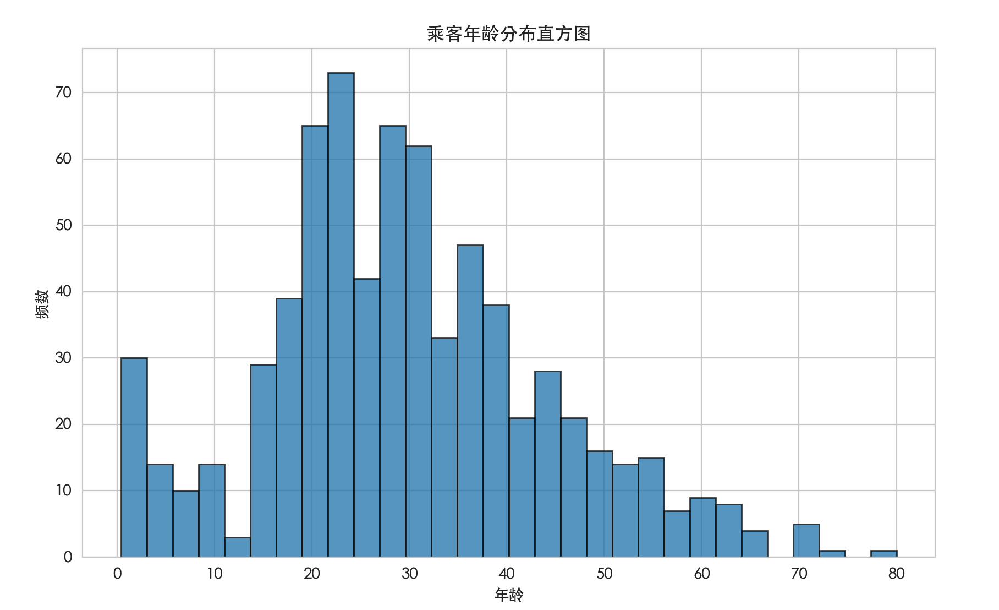

データ可視化
複雑な機械学習モデルを構築し始める前に、最初にすべきことはアルゴリズムを選ぶことではなく、データを理解する。
機械学習を料理に例えるなら、データは食材です。
優秀な料理人は食材の特性を知っていなければなりません——新鮮か傷んでいるか、甘いか酸っぱいか、煮込みに適しているか強火炒めに適しているか。
データ可視化は、データという食材を観察し味わうための拡大鏡和味蕾（味覚）。
データ可視化は、チャートやグラフなどの視覚要素を通じて、退屈な数字を直感的な画像に変換し、以下のことを可能にします：
- データのパターンやトレンドを発見する（例：売上は季節によって変化するか？）
- 外れ値や誤ったデータを特定する（例：年齢が300歳のレコード）
- 特徴量（変数）間の関係を理解する（例：住宅面積と価格は正の相関があるか？）
- 仮説を検証するそして、後続の特徴量エンジニアリングやモデル選択の根拠を提供します。
本記事では、Pythonで最も人気のあるデータサイエンスライブラリpandasと可視化ライブラリmatplotlib、seabornを使用し、データ可視化の核となるスキルを身につけます。
準備：環境とデータ
グラフを描き始める前に、「キャンバス」と「絵の具」を準備する必要があります。
必要なライブラリのインストール
Anacondaを使用している場合、これらのライブラリは通常プリインストールされています。それ以外の場合は、以下のコマンドでインストールできます：
pip install pandas matplotlib seaborn
ライブラリのインポートとデータの読み込み
古典的な公開データセットを使用します：タイタニック号の乗客データセットです。乗客の生存状況、客室等級、年齢、性別などの情報が含まれています。
実例
import pandas as pd
import matplotlib.pyplot as plt
import seaborn as sns
# グラフのスタイルを設定して見やすくする
sns.set_style("whitegrid")
# -------------------------- 中文字体の設定 start --------------------------
plt.rcParams['font.sans-serif'] = [
# Windows 優先
'SimHei', 'Microsoft YaHei',
# macOS 優先
'PingFang SC', 'Heiti TC',
# Linux 優先
'WenQuanYi Micro Hei', 'DejaVu Sans'
]
# マイナス記号が四角形になる問題を修正
plt.rcParams['axes.unicode_minus'] = False
# -------------------------- 中文字体の設定 end --------------------------
# データの読み込み
# ここでは seaborn の組み込みデータセットから直接読み込む
df = sns.load_dataset('titanic')
# データの先頭数行と基本情報を確認
print("データ形状（行数、列数）:", df.shape)
print("\nデータ先頭5行：")
print(df.head())
print("\nデータ基本情報（型、非null値の数など）：")
print(df.info())
# データの読み込み
# ここでは seaborn の組み込みデータセットから直接読み込む
df = sns.load_dataset('titanic')
# データの先頭数行と基本情報を確認
print("データ形状（行数、列数）:", df.shape)
print("\nデータ先頭5行：")
print(df.head())
print("\nデータ基本情報（型、非null値の数など）：")
print(df.info())
上記のコードを実行すると、データが891行（乗客）と15列（特徴量）であることがわかります。df.head()データがどのようなものか、最初のイメージをつかむことができます。
単変量分析：単一特徴量の分布を理解する
単変量分析はひとつの特徴量（変数）の分布に注目します。これは最も基本的な分析です。
1. 数値特徴量：ヒストグラムと箱ひげ図
のようなage（年齢）、fare（運賃）といった連続的な数値特徴量には、一般的にヒストグラム和箱ひげ図。
ヒストグラムデータが異なる区間（「ビン」）内でどのような頻度で分布するかを示します。
実例
import pandas as pd
import matplotlib.pyplot as plt
import seaborn as sns
# グラフのスタイルを設定して見やすくする
sns.set_style("whitegrid")
# -------------------------- 中文字体の設定 start --------------------------
plt.rcParams['font.sans-serif'] = [
# Windows 優先
'SimHei', 'Microsoft YaHei',
# macOS 優先
'PingFang SC', 'Heiti TC',
# Linux 優先
'WenQuanYi Micro Hei', 'DejaVu Sans'
]
# マイナス記号が四角形になる問題を修正
plt.rcParams['axes.unicode_minus'] = False
# -------------------------- 中文字体の設定 end --------------------------
# データの読み込み
# ここでは seaborn の組み込みデータセットから直接読み込む
df = sns.load_dataset('titanic')
# データの先頭数行と基本情報を確認
print("データ形状（行数、列数）:", df.shape)
print("\nデータ先頭5行：")
print(df.head())
print("\nデータ基本情報（型、非null値の数など）：")
print(df.info())
# 年齢のヒストグラムを描画
plt.figure(figsize=(10, 6)) # グラフのサイズを設定
plt.hist(df['age'].dropna(), bins=30, edgecolor='black', alpha=0.7) # dropna() で欠損値を無視
plt.title('乗客の年齢分布ヒストグラム')
plt.xlabel('年齢')
plt.ylabel('頻度')
plt.show()

解釈：このグラフから、乗客の年齢がどの区間に集中しているか（例：20〜30歳）、分布が対称かどうか、外れ値があるかどうかなどを知ることができます。
箱ひげ図はデータの中央値、四分位数、外れ値。
実例
plt.figure(figsize=(8, 5))
plt.boxplot(df['fare'].dropna())
plt.title(# 運賃の箱ひげ図を描画)
plt.ylabel('運賃の箱ひげ図')
plt.show()
'運賃'解釈：箱の中央の線は中央値です。箱の上下の境界は上側四分位数（Q3）と下側四分位数（Q1）です。上下の「ひげ」は通常、四分位範囲の1.5倍以内の最も遠いデータ点まで伸び、それを超えた点は外れ値
2. カテゴリ特徴量：棒グラフ
2. カテゴリ特徴量：棒グラフsexのようなembarked（性別）、survived（乗船港）（生存の有無）といったカテゴリ特徴量には、棒グラフ
実例
survival_counts = df['sex'].value_counts()
plt.figure(figsize=(8, 5))
plt.bar(survival_counts.index, survival_counts.values, color=['lightblue', 'lightcoral'])
plt.title(# 乗客の性別の棒グラフを描画)
plt.xlabel('乗客の性別分布')
plt.ylabel('性別')
plt.show()
二変量分析：特徴量間の関係を探る
二変量分析：特徴量間の関係を探る二変量分析はふたつの
1. 数値 vs 数値：散布図
1. 数値 vs 数値：散布図
実例
plt.figure(figsize=(10, 6))
plt.scatter(df['age'], df['fare'], alpha=0.5) # 年齢と運賃の散布図を描画
plt.title(# alpha は透明度を設定し、点の密度を観察しやすくする)
plt.xlabel('年齢 vs 運賃 散布図')
plt.ylabel('年齢')
plt.show()
- '運賃'解釈
2. カテゴリ vs 数値：グループ別箱ひげ図またはバイオリン図
2. カテゴリ vs 数値：グループ別箱ひげ図またはバイオリン図
実例
plt.figure(figsize=(10, 6))
sns.boxplot(x='pclass', y='fare', data=df)
plt.title(# seaborn を使用してグループ別箱ひげ図を描画 (pclass: 客室等級、1/2/3等室))
plt.show()
- '客室等級別の運賃分布'：非常に明快です！客室等級が高いほど（1等客室）、運賃の中央値と全体の範囲が明らかに高くなります。これは私たちの常識と完全に一致します。
バイオリンプロットは箱ひげ図の高度版であり、統計量だけでなく、カーネル密度推定によってデータの実際の分布形状も示します。
実例
plt.figure(figsize=(10, 6))
sns.violinplot(x='sex', y='age', data=df, inner='quartile') # inner パラメータで四分位線を表示
plt.title('性別ごとの年齢分布（バイオリンプロット）')
plt.show()
3. カテゴリ vs カテゴリ：積み上げ棒グラフまたはヒートマップ
2つのカテゴリ型変数に対しては、積み上げ棒グラフを使って組み合わせを観察できます。例：「性別ごとの生存率はどうか？」
実例
cross_tab = pd.crosstab(df['sex'], df['survived'], normalize='index') # normalize='index' で行ごとに比率を計算
print(cross_tab)
# 積み上げ棒グラフを描画
cross_tab.plot(kind='bar', stacked=True, figsize=(10, 6), color=['tomato', 'lightgreen'])
plt.title('性別ごとの生存率')
plt.xlabel('性別')
plt.ylabel('比率')
plt.legend(['非生存', '生存'])
plt.show()
解釈：グラフとクロス集計表から、女性の生存率が男性よりはるかに高いことが明らかにわかります。これは非常に強いシグナルであり、sex特徴が生存予測にとって極めて重要であることを示しています。
多変量分析と高度な可視化
時には3つ以上の変数を同時に考慮する必要があります。seabornライブラリはこれを簡単にしてくれます。
1. グループ付き散布図
散布図をベースに、色や形で3つ目の（カテゴリ型）変数を区別できます。
実例
plt.figure(figsize=(12, 8))
sns.scatterplot(x='age', y='fare', hue='survived', style='survived', data=df, alpha=0.7)
plt.title('年齢 vs 運賃（生存状況で色分け）')
plt.show()
- 解釈：このグラフにより、生存者（オレンジ）と非生存者（青）が「年齢-運賃」という2次元空間で分布に違いがあるかを直感的に把握できます。
2. 相関行列ヒートマップ
複数の数値特徴がある場合、それらのペアごとの相関係数を一度に計算し、ヒートマップで表示できます。
実例
numeric_df = df.select_dtypes(include=['float64', 'int64'])
# 相関係数行列を計算
corr_matrix = numeric_df.corr()
# ヒートマップを描画
plt.figure(figsize=(12, 8))
sns.heatmap(corr_matrix, annot=True, cmap='coolwarm', center=0, square=True)
plt.title('数値特徴の相関行列ヒートマップ')
plt.show()
解釈：色が暖かい（赤）ほど正の相関が強く、冷たい（青）ほど負の相関が強いことを示します。annot=True具体的な数値をセル内に表示します。例えば、pclass（客室等級）とfare（運賃）は強い負の相関（-0.55）を示します。つまり、客室等級の番号が小さいほど（等級が高いほど）運賃が高く、これは前述の分析と一致します。
実践演習：実際に手を動かして探索する
それでは、以下の演習に挑戦して、学んだ知識を定着させましょう。
- データの確認：次を使用
df.isnull().sum()データセット内のどの列に欠損値があり、どれだけ欠損しているかを確認します。 - 分布の描画：対象の
age列に対してバイオリンプロットを描画し、、さらにsurvived（生存状況）でグループ化（使用sns.violinplot(x='survived', y='age', data=df)）。生存者と非生存者の年齢分布にどのような違いがあるか観察しましょう。 - 関係の探索：次を使用
sns.countplot(x='pclass', hue='survived', data=df)カウント棒グラフを描画して、客室等級ごとの生存者数を比較します。どのような結論が得られますか？ - （チャレンジ）多変量グラフ：次のものを描画してみましょう散布図行列、一括で確認します
age、fare、parch（親/子の人数）といった複数の数値変数のペアごとの関係を確認します。ヒント：次を使用できますsns.pairplot(df[['age', 'fare', 'parch', 'survived']], hue='survived')。
まとめ
データ可視化は機械学習ワークフローにおいて欠かせない探索的ステップです。この記事を通じて、次のことを学びました：
中心となるツール：次を使用matplotlibで基本のグラフを描画し、次を使用してseabornより美しく情報量の多い統計グラフを描画します。
分析の考え方：
- 単変量解析：ヒストグラム/箱ひげ図で分布を確認し、棒グラフで個数を数えます。
- 二変量解析：散布図で数値関係を確認し、グループ化箱ひげ図でカテゴリが数値に与える影響を確認し、積み上げ棒グラフでカテゴリの組み合わせを確認します。
- 多変量解析：色分けされた散布図や相関ヒートマップで、より複雑なパターンを明らかにします。
中心となる目標：すべてのグラフは仮説を立て、和洞察を得るためのものです、例えば性別は重要な予測特徴である可能性があり、運賃データには処理が必要な外れ値が多数あることなどが挙げられます。
覚えておいてください。データをモデルに与える前に、必ず時間をかけてよく確認してください。明確な可視化による発見は、複雑なアルゴリズムよりも早く正しい方向へ導いてくれることがよくあります。
その他の拡張
クリックしてノートを共有
<p style="font-size:14px;">ノートはこの記事の内容の拡張である必要があります！</p><br> <p style="font-size:12px;"><a href="../tougao.html" target="_blank">記事の投稿は、こちらをクリック</a></p> <p style="font-size:14px;"><a href="../w3cnote/runoob-user-test-intro.html" target="_blank">登録招待コードの取得方法</a></p> <h3 class="text-muted"><i class="fa fa-info-circle" aria-hidden="true"></i> ノートを共有する前に<a href=";.html" class="runoob-pop">ログイン</a>が必要です！</h3> <p><a href="../w3cnote/runoob-user-test-intro.html" target="_blank">登録招待コードの取得方法</a></p>